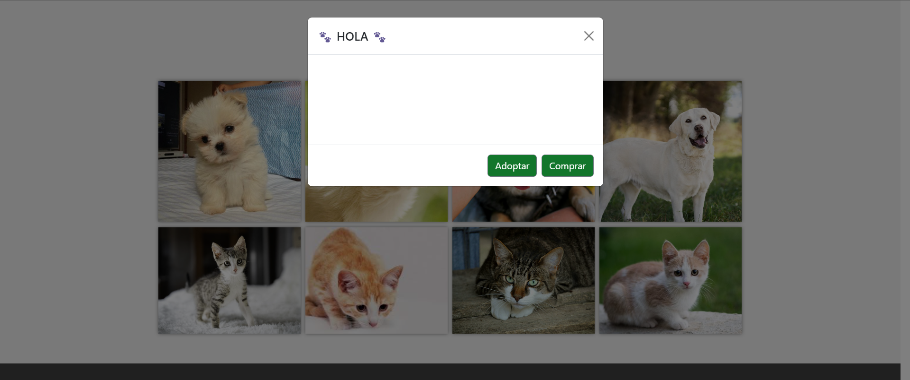

Navegación
Misión y Visión
Para acceder a la sección de misión y visión de la aplicación web deben dar click en la pestaña de "Misión y Visión" del menu principal, esto los llevara a la sección de la pagina donde se detalla la misión y visión del negocio.
Nuestros Clientes
Para acceder a la sección de Nuestros Clientes de la aplicación web deben dar click en la pestaña de "Nuestros Clientes" del menu principal, esto los llevara a la sección de la pagina donde se detalla la infomación de los clientes destacados.
Nuestros servicios
Para acceder a la sección de Nuestros servicios de la aplicación web deben dar click en la pestaña de "Nuestros servicios" del menu principal, esto los llevara a la sección de la pagina donde se detalla la infomación sobre los servicios de adopción y compra de la fundación.
Inicio de sesión
Esta opcion del menu de navegación permite a los usuarios registrados acceder a la aplicación web,
Registro de usuario e inicio de sesión
Inicio de sesión
En esta página los usuarios podran iniciar sesión dentro de la aplicación web, para ello
deben ingresar su correo electronico y contraseña.
En caso que no esten registrados, deben dar click en el enlace "Registrarse" para crear una cuenta.
En caso que no deseen iniciar sesión, pueden dar click en el boton "Salir" para volver a la pagina principal.
Registrarse
En esta página los usuarios que aun no tengan una cuenta podran registrarse, para el registro de usuario deben
ingresar la siguiente información:
Nombre: Ingresa un nombre, de preferencia es que lo identifique mas.
-
Apellido: Ingresa un apellido, de preferencia es que lo identifique mas.
-
Correo electronico: Ingresa el correo electronico que le servira para la información que sea relevante dentro de la aplicación.
-
Contraseña: Ingresa la contraseña, esta debe ser unica y lo suficientemente segura para que no exista ninguna violación de seguridad.
La contraseña debe ser confirmada para que no exista ningun error de ingreso. -
Número de telefono: Ingresa su número de telefono, este le servira para enviar información adicional sobre los procesos de compra y adopción dentro de la fundacióon.
Acciones basicas dentro de la aplicación
Busqueda de mascota
Los usuarios podran buscar mascotas dentro de la aplicación web, para ello
deben ingresar la siguiente información:
Apodo(Obligatorio)
Seleccionar el sexo(Opcional)
Seleccionar el estado de la adopción(Opcional)
Seleccionar la edad relativa(Opcional)
Seleccionar mascota
Los usuarios pueden elegir una mascota de su preferencia, la cual se puede adoptar o comprar, para ello los usuarios debe seleccionar a la mascota que deseen y se generar un menu que les permitira elegir entre adoptar o comprar.
Adquirir mascota
Para la adquisición de una mascota elegida se debe ingresar la siquiente información:
ID de la mascota Especifica el ID de la mascota que se desea adquirir.
ID del usuario Especifica el ID del usuario que adquirira la mascota.
Fecha de adquisición Especifica la fecha en la que se adquirira la mascota.
Cantidad Especifica la cantidad de mascotas que se adquirira.
Monto de pago Especifica el monto que se pagara por la adquisición de la mascota(0.00 si es adoptada).
Vista del cliente y administrador
Vista del cliente
Esta vista permite visualizar la pantalla principal cuando un usuario cliente inicia sesión, esta página muestra la información basica que tiene la pantalla principal predeterminada, pero con la diferencia que el usuario cliente podra visualizar la información de las mascotas que ha adquirido si presiona en el botón del carrito.
Vista del administrador
Esta vista permite visualizar la pantalla principal cuando un usuario cliente inicia sesión, esta página muestra la información basica que tiene la pantalla principal predeterminada, pero con la diferencia que este puede registrar mascotas nuevas asi como las razas y las especies de las mascotas.
Acciones del administrador
Ingreso de especies
Para registrar una especie nueva el administrador debe seleccionar la opción de "Ingresar especie" y llenar la información en este caso el nombre de la especie, posterior a ello el administrador decidir si guardar la información o no.
Ingreso de raza
Para registrar una raza nueva el administrador debe seleccionar la opción de "Ingresar raza" y llenar
la información requerida:
Nombre de la raza Especifica el nombre de la raza que se desea registrar.
Precio de la raza Especifica el valor monetario de la raza que se desea registrar.
ID de la especie Especifica el ID de la especie a la que pertenece la raza.
Ingreso de mascota
Para registrar una mascota nueva el administrador debe seleccionar la opción de "Ingresar mascota", lo que le llevara
a otra página donde debe llenar la información requerida:
Apodo de la mascota Especifica el apodo de la mascota que se desea registrar.
Seleccionar el genero de la mascota Especifica el genero de la mascota que se desea registrar,
tiene dos opciones "Macho" o "Hembra".
ID de la raza Especifica el ID de la raza a la que pertenece la mascota.
Seleccionar imagen de la mascota Sube a la aplicación la imagen de la mascota que se desea registrar.
Edad Relativa Especifica la edad de la mascota que se desea registrar, tiene dos opciones "Cachorro" o "Adulto".
Fecha de ingreso Ingresa la fecha en la que se registro la mascota.